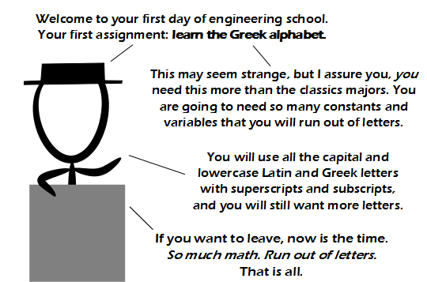

Comic JK 788
When I Feel Like It
⇤
<
?
>
⇥

⇤
<
?
>
⇥
Forum
.
RSS
.
Digg
.
Facebook
.
Reddit
.
Twitter
.
Stumbleupon
Enter your thoughts on number 788 here. Please, no spamming, trolling, phreaking, running out of letters, or typing a greek alttext. JK who? Your mother only knows four letters. SPOILER ALERT: You can get the alttext in the source. >No you can't! >>ASCII and you shall receive. >I'm too lazy to try to figure out the alt text, so someone please just type the translation here: "Or one could be a computer engineer and use only ASCII." >>UTF-8 is the language of the gods. Was this comic inspired by the comments on the previous one? Wow, you're right. I'm a computer engineer and ASCII has plenty of letters for all of the math I do. This is the primary reason I switched from Engineering to Computing. Fun fact: when Windows runs out of letters (for mounting drives C: D: E: etc), it just *gives up.* You can't mount more than 26 drives in windows. Ever. >In fact, you can mount them into NTFS-Folders. >>Maybe it should do what spreadsheets do and start at AA:, AB:, etc. >>No, drive letters are just broken by design and need to die. [gem] Remembering all those dodgy bits of rubbish code I wrote in the 80s that would break (the entered path is relative if the first letter is not a slash, and the second letter is not a colon). Maybe this is the next millenium bug waiting to happen :-) I like the idea of using @: as a mount-point? >>> Funny, I can mount as many drives as I like in my /Volumes folder... with Greek names, if I like... >>>> Greek, Japanese, Hebrew, as long as it doesn't have some other special meaning, I can name a mountpoint that. If it isn't over something like 64 characters. Which yields a very, very large number of possibilities. what does it mean?